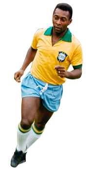

Pelé
El mejor futbolista de todos los tiempos, en opinión de muchos, fue rechazado por los principales clubes de fútbol brasileños en los comienzos de su carrera deportiva, hasta que, tras jugar en varias formaciones secundarias, en 1956 fichó por el Santos de São Paulo. A los 15 llegó al Santos, después de la selección nacional de Brasil.
Era un jugador de corpulencia media que conjugaba una gran habilidad técnica, un poderoso disparo con ambas piernas y una inusitada capacidad de anticipación. A lo largo de su dilatada carrera deportiva, Pelé ganó con su club diez Campeonatos Paulistas, dos Copas Libertadores, otras dos Copas Intercontinental y un Campeonato Mundial de clubes.
Pelé debutó en la selección brasileña con sólo diecisiete años y, ya entonces, su contribución a la magia del juego carioca fue clave para la obtención del título mundial en Suecia en 1958. La incorporación de los jóvenes Pelé y Garrincha puso en marcha un juego artístico, fluido y dominador, el llamado jogo bonito. Se iniciaba así en los campeonatos mundiales una etapa brillante, con los mundiales de 1958, 1962 y 1970.
Tras obtener todos los títulos posibles y haber contabilizado más de mil goles marcados en partidos oficiales, anunció su retirada del deporte activo en 1974. Sin embargo fichó en 1975 por el Cosmos de Nueva York. Tras retirarse definitivamente en 1977, O Rei recibió numerosos galardones y reconocimientos, tales como el Premio Internacional de la Paz o el de Atleta del Siglo.
Pelé continuó también ejerciendo una importante influencia en el mundo del fútbol desde los despachos, y en 1995 fue nombrado ministro de Deportes en Brasil, cargo desde el cual impulsó la llamada Ley Pelé, con la cual pretendía modificar la legislación en materia de contratos deportivos entre clubes y jugadores.
